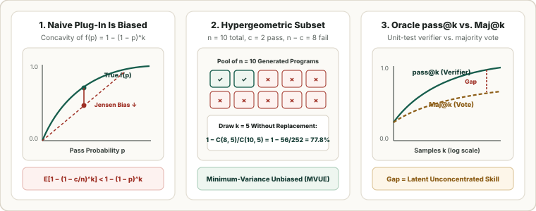

Code & Verifiable Reasoning Metrics: Unbiased Hypergeometric $\text{pass}@k$ and Self-Consistency ($\text{Maj}@k$)
In code generation (HumanEval, MBPP, SWE-bench) and verifiable mathematical reasoning (MATH, AIME), correctness is determined by executing a unit-test suite or symbolic verifier rather than matching a reference string. This chapter proves why the naive binomial plug-in estimator $1 - (1 - c/n)^k$ is systematically downward biased, derives the exact minimum-variance unbiased hypergeometric estimator $\widehat{\operatorname{pass}@k}$, and compares oracle verification against test-time majority voting ($\operatorname{Maj}@k$).

1. Why Naive Binomial Plug-In $\text{pass}@k$ Is Downward Biased
Suppose a language model generates a passing program on a given problem with unknown true probability $p \in [0, 1]$ per independent sample. Under $k$ independent draws, the true probability that at least one candidate passes all unit tests is:
In practice, we draw $n \ge k$ samples at temperature $T > 0$ and observe $c \sim \operatorname{Binomial}(n, p)$ passing solutions. Plugging the empirical pass rate $\hat p = c/n$ directly into $f(p) = 1 - (1 - p)^k$ is downward biased for every $k \ge 2$ whenever $0 < p < 1$, because $f''(p) = -k(k-1)(1-p)^{k-2} < 0$ (strict concavity) and Jensen's inequality forces:
2. The Unbiased Hypergeometric Estimator (Chen et al., 2021)
Because the total number of passes $c$ is a complete sufficient statistic for $p$, the unique minimum-variance unbiased estimator (MVUE) of $(1 - p)^k$ (by the Lehmann–Scheffé theorem) is the probability that a subset of size $k$ drawn without replacement from the $n$ generated samples contains zero passing programs—i.e., all $k$ draws come from the $n - c$ failing samples (Chen et al., 2021):
Evaluating the telescoping ratio $\prod_{j=0}^{k-1} \frac{n - c - j}{n - j}$ term-by-term keeps every intermediate factor in $(0, 1]$, preventing integer factorial overflow at large $n$ (e.g., $n = 200, k = 100$).
Worked Numerical Comparison ($n = 10$ total samples, $c = 2$ passing, so $\hat p = 0.20$):
| Budget $k$ | Unbiased Hypergeometric Formula $1 - \frac{\binom{8}{k}}{\binom{10}{k}}$ | Unbiased $\widehat{\operatorname{pass}@k}$ | Biased Plug-In $1 - (1 - 0.2)^k$ | Finite-Sample Bias |
|---|---|---|---|---|
| $k = 1$ | $1 - \frac{8}{10}$ | $\mathbf{0.2000}$ | $0.2000$ | $0.00\%$ |
| $k = 2$ | $1 - \frac{8 \times 7}{10 \times 9} = 1 - \frac{56}{90}$ | $\mathbf{0.3778}$ | $1 - 0.8^2 = 0.3600$ | $-1.78\%$ |
| $k = 5$ | $1 - \frac{\binom{8}{5}}{\binom{10}{5}} = 1 - \frac{56}{252}$ | $\mathbf{0.7778}$ | $1 - 0.8^5 = 0.6723$ | $-10.55\%$ |
| $k = 8$ | $1 - \frac{\binom{8}{8}}{\binom{10}{8}} = 1 - \frac{1}{45}$ | $\mathbf{0.9778}$ | $1 - 0.8^8 = 0.8322$ | $-14.56\%$ |
| $k = 9$ | $n - c = 8 < 9 \implies \binom{8}{9} = 0$ | $\mathbf{1.0000}$ | $1 - 0.8^9 = 0.8658$ | $-13.42\%$ |
3. Oracle Verification ($\text{pass}@k$) vs. Test-Time Self-Consistency ($\text{Maj}@k$)
Achieving $\operatorname{pass}@k$ at deployment requires an external oracle verifier (such as a compiler and unit-test harness) to filter the $k$ candidates. When no verifier is available at inference time, Self-Consistency ($\operatorname{Maj}@k$, Wang et al., 2023) marginalizes over $k$ sampled chain-of-thought reasoning paths $y_1, \dots, y_k$ by taking the plurality vote over their extracted final answers $a(y_j)$:
If the correct answer $a^\star$ has probability $p$ and incorrect answers disperse across many distinct values (each with probability $q_{\text{max}} < p$), $\operatorname{Maj}@k \to 1$ exponentially fast in $k$ by Hoeffding's inequality. Conversely, if a systematic misconception has mode probability $q_{\text{max}} > p$, then $\operatorname{Maj}@k \to 0$ as $k \to \infty$ even while $\operatorname{pass}@k \to 1$. The verification gap $\Delta_{\text{ver}}(k) = \operatorname{pass}@k - \operatorname{Maj}@k$ quantifies latent reasoning skill that reinforcement learning (RLVR) or process reward models (PRMs) can unlock.
4. Reference Python Implementation
from collections import Counter
from typing import Sequence
def unbiased_pass_at_k(n: int, c: int, k: int) -> float:
"""Chen et al. (2021) exact hypergeometric pass@k estimator."""
if n - c < k:
return 1.0
prod = 1.0
for j in range(k):
prod *= (n - c - j) / (n - j)
return 1.0 - prod
def biased_plugin_pass_at_k(n: int, c: int, k: int) -> float:
"""Naive binomial plug-in 1 - (1 - c/n)^k (downward biased for k >= 2)."""
return 1.0 - (1.0 - c / n) ** k
def majority_vote(answers: Sequence[str]) -> str:
"""Self-Consistency (Maj@k) plurality vote over extracted final answers."""
return Counter(answers).most_common(1)[0][0]
for k in (1, 2, 5, 8, 9):
unb = unbiased_pass_at_k(10, 2, k)
plg = biased_plugin_pass_at_k(10, 2, k)
print(f"k={k}: Unbiased={unb:.4f}, Plug-In={plg:.4f}, Bias={plg - unb:+.4f}")Sources
Chen et al., Evaluating Large Language Models Trained on Code — Codex & Unbiased pass@k (arXiv, 2021); Wang et al., Self-Consistency Improves Chain of Thought Reasoning in Language Models — Maj@k (ICLR, 2023); Cobbe et al., Training Verifiers to Solve Math Word Problems (arXiv, 2021).